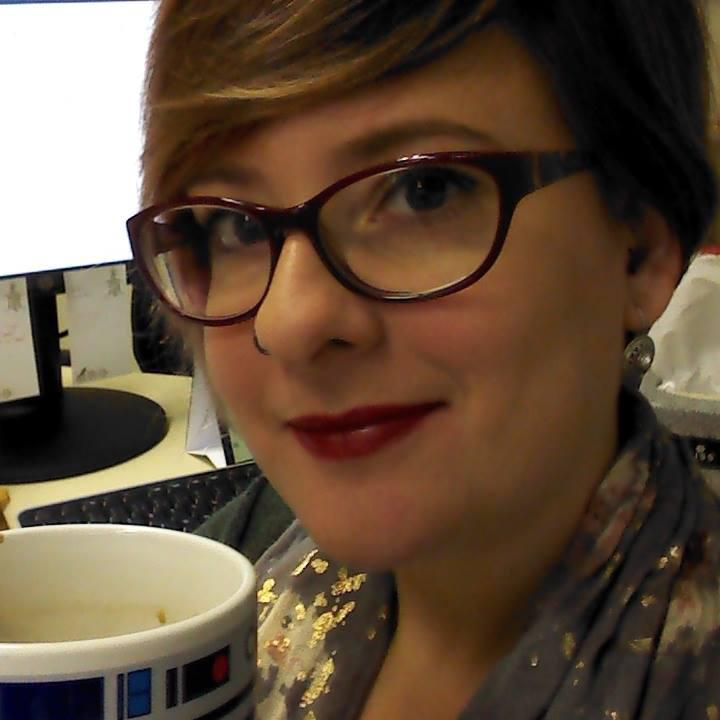

Quem sou eu

Oi!
Eu sou uma matemática e desenvolvedora de software que vive em Florianópolis. Tenho um filho de 6 anos e gosto de crochê, tricô, ponto-cruz e todo tipo de trabalhos manuais. Meus interesses principais são matemática, programaćão, software e comunidades livres/open source, ficção científica e maternidade. Meus pronomes são ela/dela.
Eu trabalho na Quansight, e dedico meu tempo ao NumPy e outros projetos open source. Eu sou apaixonada por educação, mentoria, e estou envolvida com a comunidade Python já há algum tempo. Você pode encontrar os slides das minhas palestras e aulas aqui; fique à vontade para usar esses materiais de acordo com as licenças determinadas em cada repositório.
Você pode me encontrar no Twitter e no LinkedIn, e você também pode entrar em contato por email em melissawm@gmail.com.
Meu histórico
Sou bacharel em Matemática e Computação Científica pela Universidade Federal de Santa Catarina, mestre em Matemática pela mesma Universidade e doutora em Matemática Aplicada pela Facultés Universitaires Notre Dame de la Paix, em Namur (Bélgica).
Depois do meu doutorado, passei 9 anos como professora na UFSC, dando aulas, fazendo um pouco de pesquisa e outros trabalhos administrativos no departamento de matemática. Minha pesquisa envolve otimização contínua (principalmente programação não-linear), análise numérica, a solução numérica de sistemas lineares de grande porte e a implementação de software para computação científica.